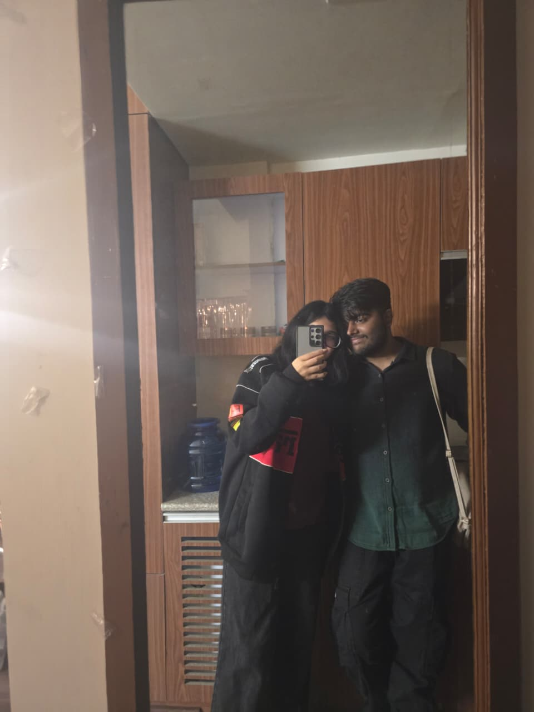
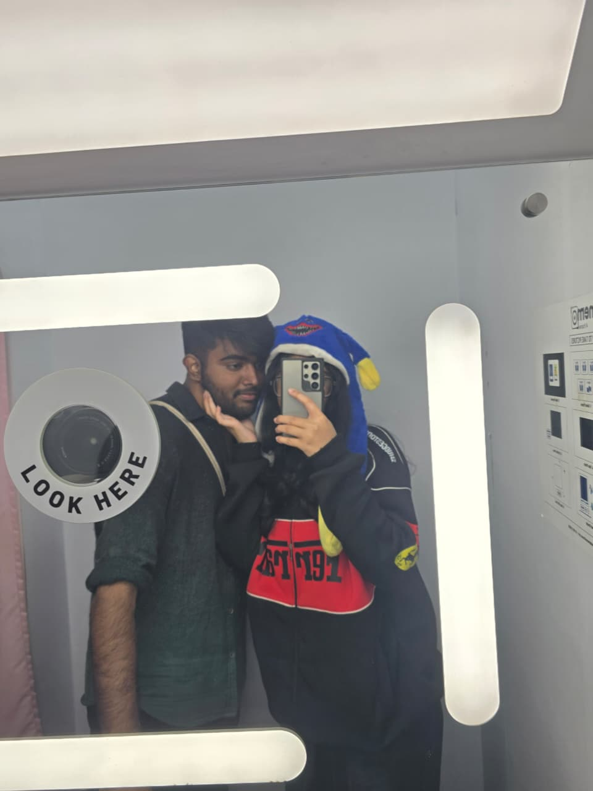
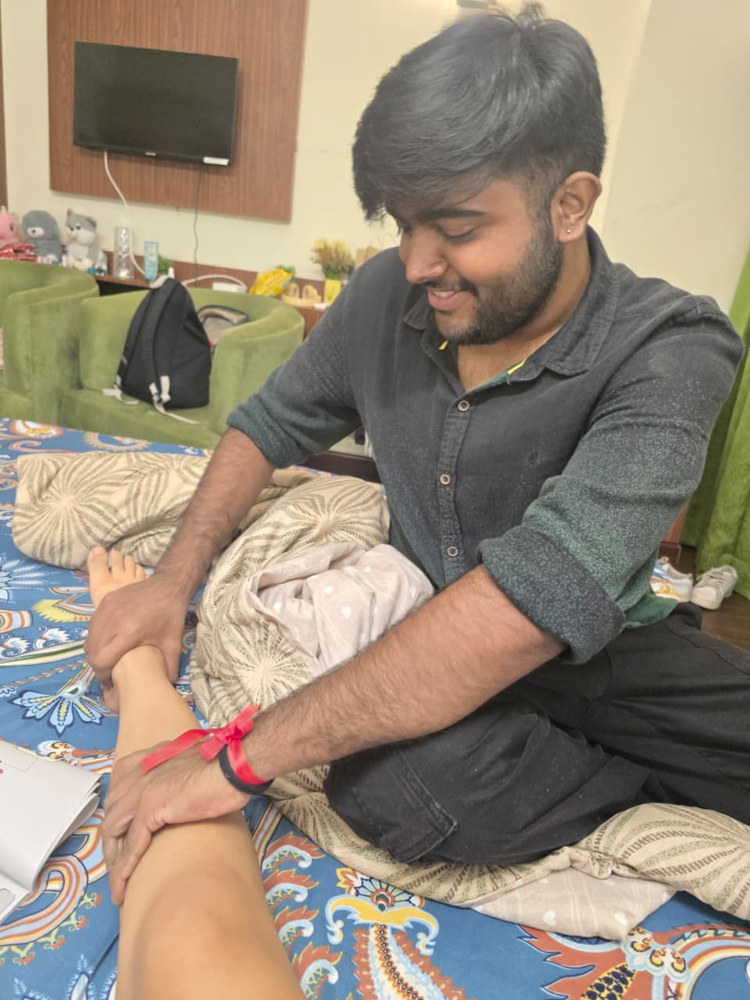
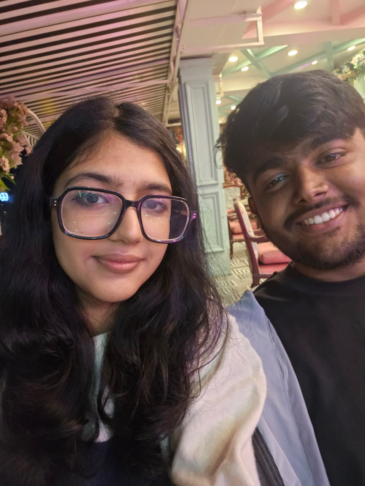

Jab maine tera account dekha tha for the first time, I didn't think
that you would become such an important person in my life.
But right now, I cannot think of anything more important to me than you.
I love you so much Riddhi, genuinely, from the bottom of my heart.
We started talking on 24th Feb 2024.
The first message I sent was,
“Would you like to listen to Streetlights with me?”
From that one message to countless songs we listened to and sang together.
Our Year Together


The fist time I said love you was on Girlfriends day that was on 1st Auguest on the most special day for
and our anniversary. After this mere life mein kbhi koi sad moment aaya hi nhi and genuinely aa bhi nhi skta
then my birthday came jispr you surprised me with a bunch of gifts and a cheesecake planned it all with harsh
and merko 1 clue bhi nhi tha you did that was the first time in my life I was ever surprised and i loved every single
part of it then it was 18th september a sad day for both of us kyuki we had a plan to meet and situation itne khrab ho
gye ddn mein that aapko ghar jana pad gya still im very happy that aap ghar gye because it was not safe hostel mein
now lets jump to your birhtday 5th October the day the love of my life was born maine bhi socha tha to surprise you
uss din with arshiya and asked sam for help but usne aisa help kiya that terko idea mil gya and it was not much of a surprise
and then days passed by and came the day 30th october.
The First Time we MET


31st of october the day we both met for the first time after being in a long distance relationship the best day
we didn't had a great start to this as I was late and made you wait for about an hour on the station but the after
that it was a breeze the first moment i saw you at the station with your bags and an angry face I fell in love again
the moment we both waited for so long funny enought we both had surprises for each other and I LOVED THE FERARRI LEGO BTW
BEST GIFT EVER uske bad the amount of time we had to wait for shamit to get the scooty and at the end we both gave up and
booked a cab to go the a cafe with the worst pasta and worst coffee we have ever tasted 😭😭😭😭😭 uske bad going to a
random unknown place jidhr shamit tha hi nhi udhr se waps cab krke jana to a hotel udhr utni der wait krna the first day
was not the best of the days but it was bad also because i had you by my side uske bad we had a lot of fun together, the
xoxo bakery, the kalsang photo booth the first time we cooked together that delicious pasta it was genuinely my favourite time
of the year then came november 3rd the worst day of the trip the day we both had to seperate again to go to different states
and go back in LDR the ride with you from the bnb to your hostel was bad for us we both were not ready to leave each other
and jb main terko hostel jate hue dekha i stood there jbtk tu dikh rhi thi merko and uske bad hmare din bura ho gya
bura nhi bolunga but still it got worse because merko aadat ho gyi thi teri the time i sat on the bus i opened google maps
and saw tera hostel 20km dur tha and maine maps khule rakhe and dekhta rha as the distance was increasing again and I felt
like crying tera bhi same haal hostel mein you were also very sad ek dusre ko dilasa de rhe waps aaunga milne waps milege hi
it was not easy for both of us but still we had to do it and then i came back hostel and that was the end of our trip.
Something I Wanna Say
Hey Riddhi this year has been very great for us genuinely the best but last few days were tough for both of us as
the last few days we argued a lot and it was my fault genuinely i was not putting enough efforts and you felt unloved
ik you hate it when i say this but I AM GENUINELY SORRY main nhi chahta you ever cry because of me and this is a kind of
a way i want to show I love you and I want to spend the rest of my life with you and no one else i dont want anyone else in
my life the day you didnt text me for almost a day both of our days were ruined and uske bad bhi we didnt talk ache se and
we slept on a bad note ik main bolta boht hu ki i will change but kbhi ache se kaam nhi kiya us chiz pr and it got so worse
that you had to tell me how to love you please forgive me for that i will never let that kind of situation happen ever again
I LOVE YOU RIDDHI you never forced me to love you I love you right now and will love you forever. HAPPY NEW YEAR MY HEART NEXT
YEAR WE BOTH ARE STARTING TOGETHER AND I WANT TO START IT ON THIS NOTE